Here you can find a collection of all my games. This concerns all my major releases, some small projects and some WIP stuff.
There is more information available here than the Itch.io pages for each game, I like to keep it pretty to the point there.
Did I mention that my games are on Itch.io? And all of them are completely free! Why not give them a try?
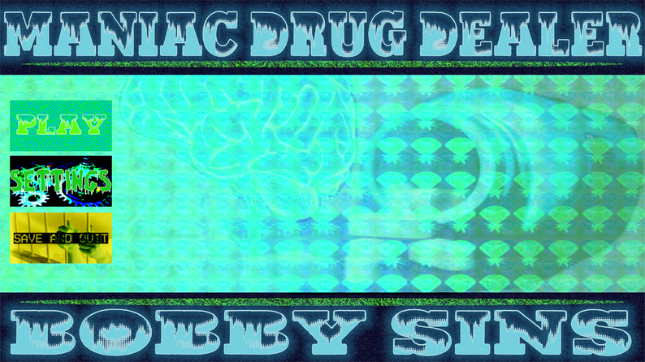
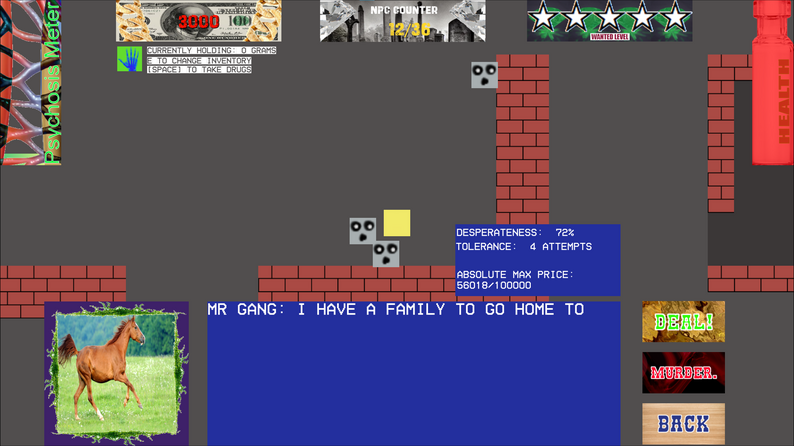
Maniac Drug Dealer
Maniac Drug Dealer is a game where you play as a drug dealer who has psychosis. Your psychosis has a profound negative impact on your ability to deal drugs - you are constantly having hallucinations of fake people, who if you sell drugs to, you make no money. It is up to you as the player to distinguish between who is real and who is fake in order to make as much money as you can before you either get caught by the cops, or your own gang takes you out. It's a strategy game that rewards trying different methods of making money, you could just as easily make it big off of just murdering people rather than selling drugs to them. The visual style of Maniac Drug Dealer is very abrasive and unapologetic, but so are them streets...
Maniac Drug Dealer is the first game I ever made using an actual game engine, so it is pretty small, but the repetitive game loop means there is still a lot of fun to be had. The randomised NPC characters and alternate routes such as the gun salesman and the laced drug dealer offer unique ways to play the game and increase the level of strategy. The game also keeps track of your highest grossing run, so you can always compete against yourself to beat your high score.
All music is from the Death Grips album, No Love Deep Web.
Download it from Itch.io to play for free!!
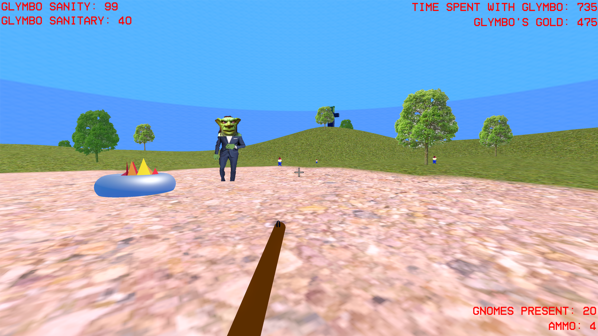
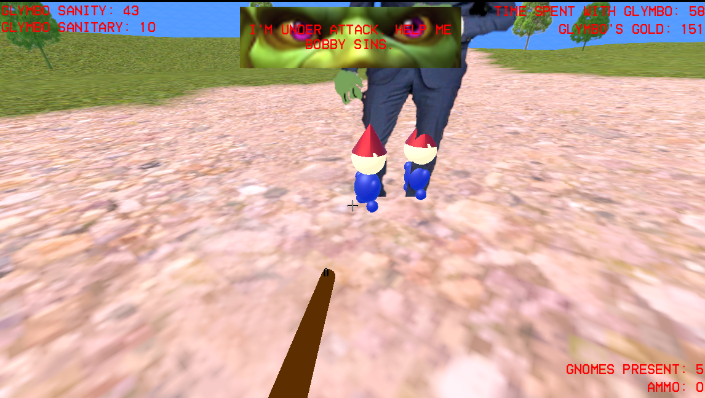
Glymbo's Gold
Glymbo's gold is a 3d, 1st person shooter where you must become friends with a goblin named Glymbo. Glymbo likes to spend his days walking around in circles in the middle of a big field, having innocent fun. But there is one issue, Glymbo absolutely hates gnomes, and the gnomes of the field try their hardest to torment Glymbo. If Glymbo is tormented for too long, his sanity will plummet - the consequences are unforeseen.
Your goal is to try to become friends with Glymbo by keeping him alive and sane for as long as you can. You do this by shooting the gnomes dead before they can ever reach your dearest friend. There are multiple gnomes, each with unique abilities, such as rudeness, peeing, and robbery. When you kill a gnome, gold is released, which can be spent at the nearby shop on Glymbo's favourite - items of furniture. Nothing is said to calm a goblin more.
You can become friends with Glymbo for free today! Just download from Itch.io to begin the simulation.
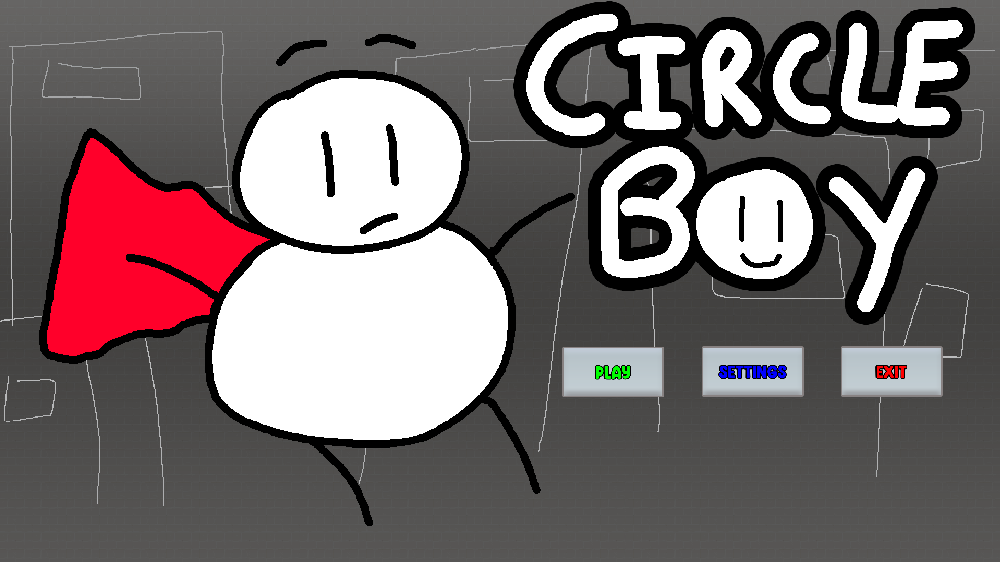
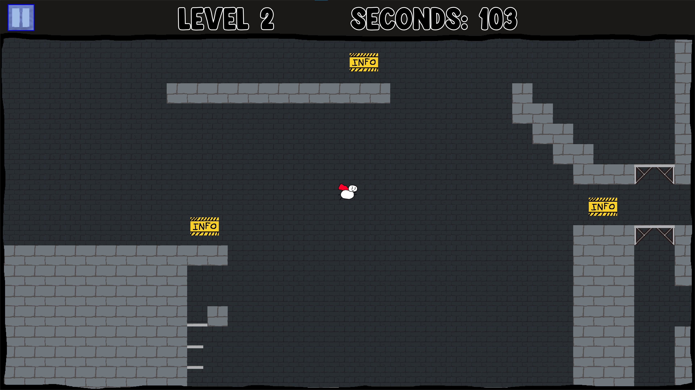
Circle Boy
Circle Boy is a puzzle platformer where you play as the titular character Circle Boy. Circle Boy is different from other platforming characters, his jump is not very powerful at all, but when he lands, he does a bounce to gain height. This movement gimmick challenges you to think about how to approach each platforming challenge in a unique way.
Since Circle Boy loves to bounce, he wants to climb up the tallest building in the city just for the sake of jumping off the top to make the largest bounce. In order to reach the top, you must go through a set of 20 linear levels, which introduce new challenges along the way. Each level also has an optional collectible to get, and you can compete against yourself to beat your best times on each level.
The gameplay of Circle Boy is very fun, but is also challenging. In order to get through to the top, you will have to get a good grasp on how to handle Circle Boy's unique movement. The style is very reminiscent of old flash platformers, which was my main inspiration for making this game.
Also, I put this game in for the BAFTA Young Game Designers competition in 2025, and made it as a finalist, which has to count for something!
All music used is from Kevin MacLeod.
You can download the game here.
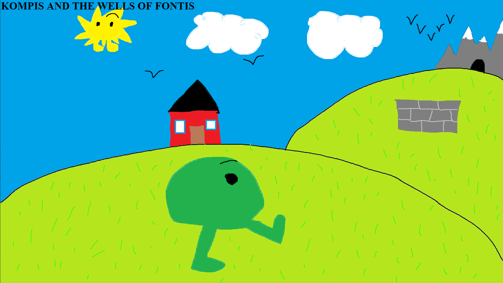
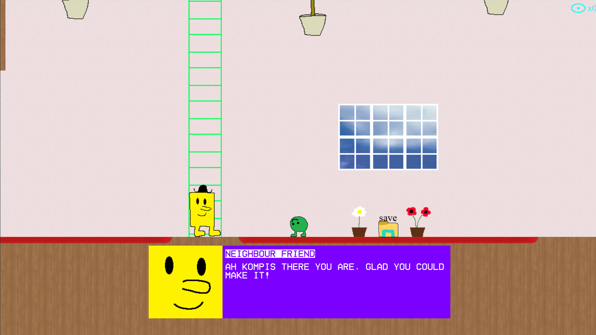
KOMPIS AND THE WELLS OF FONTIS
A story-based platformer where you play as a man called Kompis. Kompis leaves his house one day to go explore a cave, but along the way, he gets kinda bored, and instead jumps down a nearby well. Stranded down the well, he must now learn the consequences of his actions and try to get back up to his home.
There are 5 unique areas to explore, with over 100 different rooms in total. The gameplay is mostly linear as it takes you through the story, but there are many points where the player gets to choose the route, with multiple different endings that can be reached.
It becomes apparent that the well that Kompis has jumped down is not a normal well - all sorts of weird things happen down there. Your dark consciousness manifests itself in the form of a demon called Evil Thought, who slanders you constantly on your journey home. You also meet strange beings called the Fontis, animated water spirits who carry great untold wisdoms. There is much more to be seen, but that is enough spoiling for now...
Kompis And The Wells Of Fontis is a very unique game with an atmosphere of its own. Someone empty and ambient feeling. It is a fun experience that you can get through in around 2 hours, but warrants more investment if you are willing to aim for the true ending or are trying to find the many secrets I have hidden in this game.
Music credits can be accessed in-game.
Download the game here to play on your system today for free!
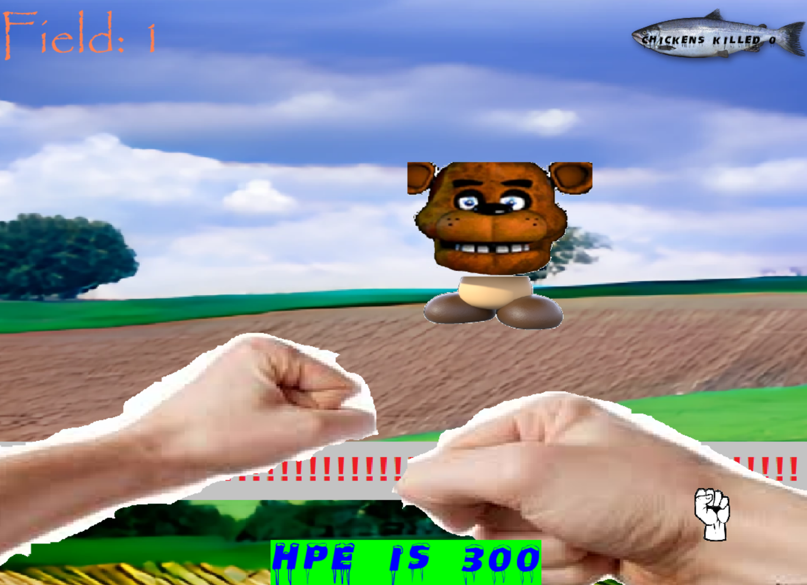
Mr Twiddle's Wee Diddy Farm (old)
A game about punching through waves of "chickens". There are 5 levels to get through. After exploring each field, you eventually stumble across Mr Twiddles, who you then kill.
This is the first game I ever published officially under Bobby Sins. It mainly serves as a port of the Scratch version that I made for the sake of learning Pygame. It's pretty simple, but is still pretty fun, and very weird.
You can download the game here.
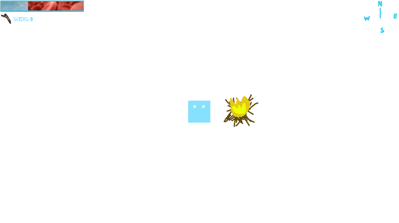
Mama I can Fly
A short game demo thing that plays like a survival game set in the snow, where you are tasked to find civilisation, but (spoiler alert) the camera tilts and it is revealed you are completely alone.
I had the idea for the camera tilting idea and thought it was pretty cool, so I decided to just show it off using a small game, put a nice twist on it. I also really like tundra aesthetics, so if you like vast stretches of nothingness (like I do) you might enjoy sitting down with this game for 5 or so minutes.
All music is taken from Harold Budd and Brian Eno's album, The Pearl.
Download from Itch.io to try it out.
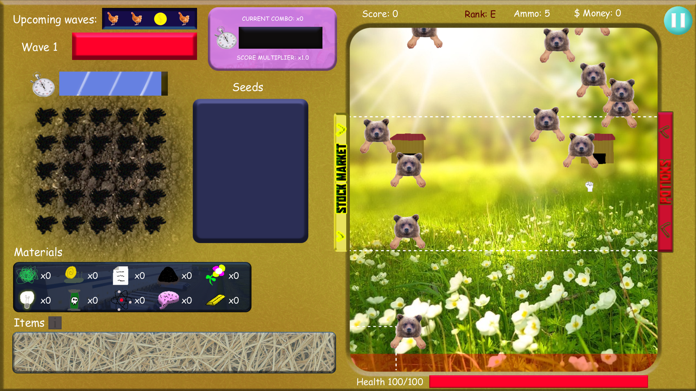
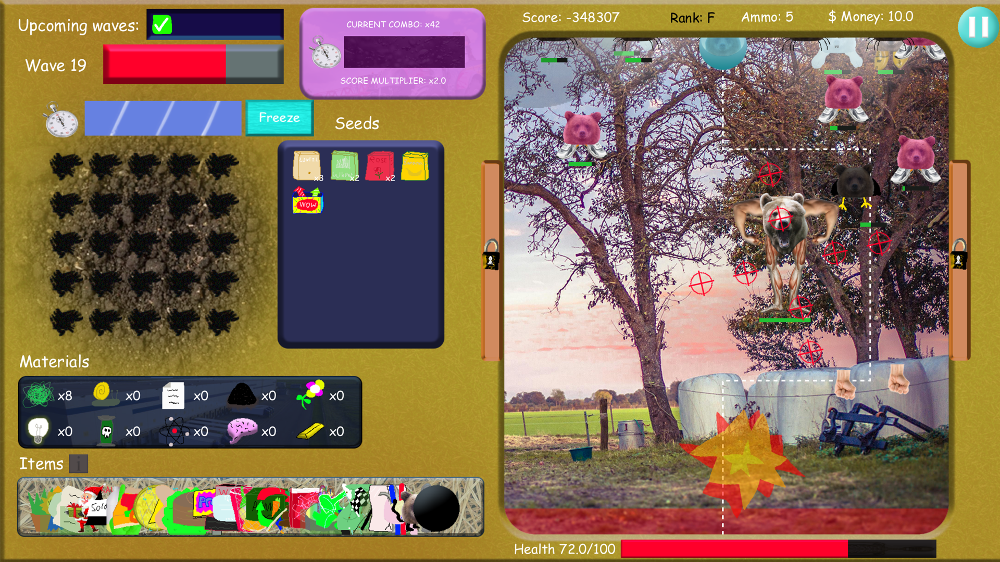
Mr Twiddle's Wee Diddy Farm Deluxe
A current work in progress that is a complete remake of Mr Twiddles Wee Diddy Farm (so much is different it hardly feels fair to label this as a remake).
A lot is subject to change at the moment, but right now it's shaking up to be a sort of farming/clicker/rougelite strategy and resource management game.
It is certainly my most ambitious game to date. I actually tried to make it all the way back in 2024, but I was too inexperienced, and had to scrap it. I have had a lot of fun working on it so far.
There is no release date at the moment. I will be sure to update this page if there is anything drastically new about the game. If you are interested, I may post about it on social media from time to time, so make sure to check out my links.
For now, you can have a couple screenshots of what it looks like less than 2 months into development...